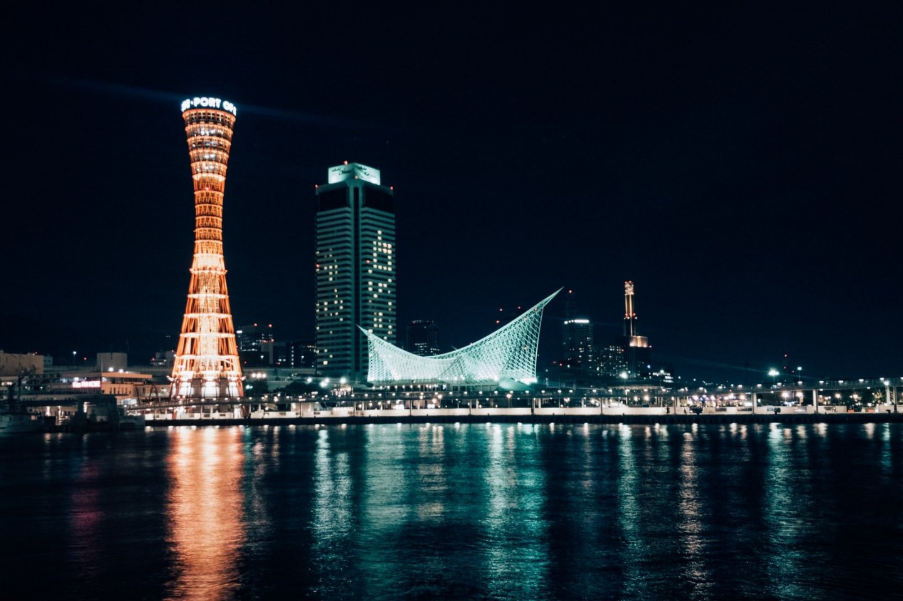

Kobe
Kobe est une ville portuaire, capitale de la préfecture de Hyogo dans la région du Kansai, avec plus d'un million et demi d'habitants. Partiellement détruite lors du fort séisme de 1995, elle est aujourd'hui connue notamment pour sa gastronomie avec le fameux bœuf de Kobé.
La ville est tristement célèbre pour le tremblement de terre de Hanshin-Awaji qui l'a frappée le 17 janvier 1995 au matin, de magnitude 7,2 sur l'échelle de Richter. Le séisme a laissé des images impressionnantes, plus de dix-mille milliards de Yens (~63,7 milliards d'euros) de dégâts matériels et, surtout, fait 6.437 morts selon le décompte officiel.
Aujourd'hui, Kobe aime accueillir les touristes à travers différents points d'intérêt: le port et sa célèbre tour, le vaste quartier de Chinatown, ou encore le parc suspendu Nunobiki et les montagnes Rokko qui surplombent la ville, offrant un large choix de randonnées et un onsen (Arima) très célèbre.
Naturellement, les gastronomes rappelleront que l'on connaît aussi le lieu pour le fameux et fondant bœuf de Kobe !